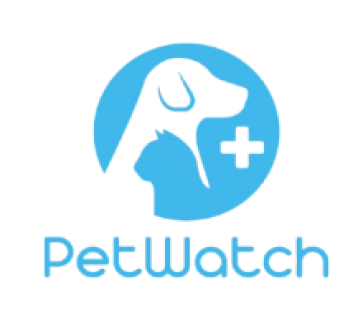

Welcome to PetWatch!

Welcome to PetWatch, your trusted partner in keeping your pets happy and healthy! Our mission is to provide compassionate care and build relationships based on trust with both you and your furry companions. Whether it's grooming, veterinary care, or essential health tips, we're here to make pet care convenient and stress-free.
At PetWatch, we pride ourselves on offering top-notch healthcare for your furry friends. With a dedicated team of experienced veterinarians, groomers, and pet care experts, we ensure that your pet receives the best possible attention and treatment. From routine check-ups to specialized care, we cover all aspects of your pet's health, using the latest techniques and technologies in pet healthcare.
Convenience is at the heart of what we do. With services offered across five islandwide locations, you can easily book appointments online, access valuable health tips, and track your pet's health records—all from the comfort of your home. We're here to make your life easier and your pet's life better.
Why Choose PetWatch?
- Compassion & Trust: We treat every pet as if they were our own, ensuring they receive the love and attention they deserve.
- Top-Notch Healthcare for Your Furry Friends: Our team provides exceptional veterinary care, backed by years of experience and cutting-edge practices.
- Convenience: With our easy-to-use booking system, multiple locations, and comprehensive services, caring for your pet has never been more accessible.
Top-Notch Healthcare for Your Furry Friends
At PetWatch, we understand the special bond between you and your pet, and we're here to support that bond with quality care, expert advice, and a commitment to excellence. Thank you for trusting us with your pet's health and well-being.
Our Vision
To be the most trusted and accessible pet care provider, ensuring every pet enjoys a healthy, happy, and fulfilling life through compassionate care and cutting-edge healthcare services.
Our Mission
At PetWatch, we are committed to:
- Delivering exceptional, personalized healthcare for pets across the island.
- Providing convenient and reliable services to pet owners, ensuring their pets receive the best care possible.
- Building lasting relationships based on compassion, trust, and excellence, making pet care both accessible and stress-free for every family.
Our Locations

Kandy

Colombo

Gampaha

Jaffna
Accreditations, Certifications & Awards
Board of Directors
Dr.Neha Kariyawasam
MBBS / MBA / PHDFounder & CEO
Dr.Athula Wijesekara
MBBS / MBA / PHDHead Veterinarian
Dr.Dinithi Dias
MBBS / MBA / PHDHead of PetCare